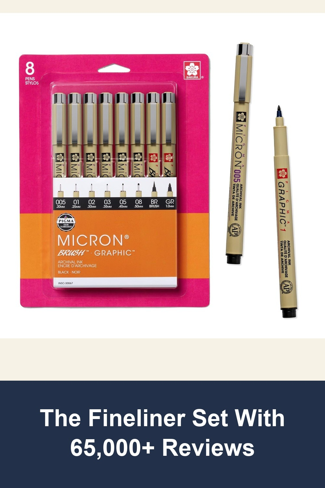
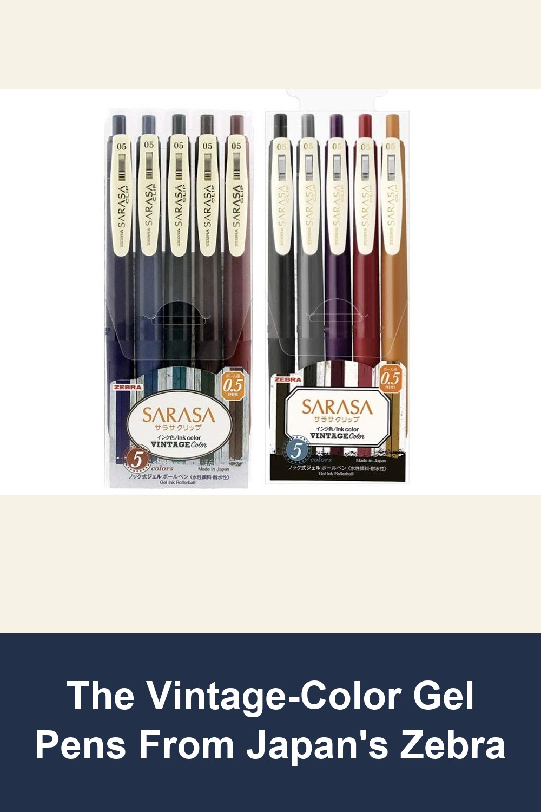
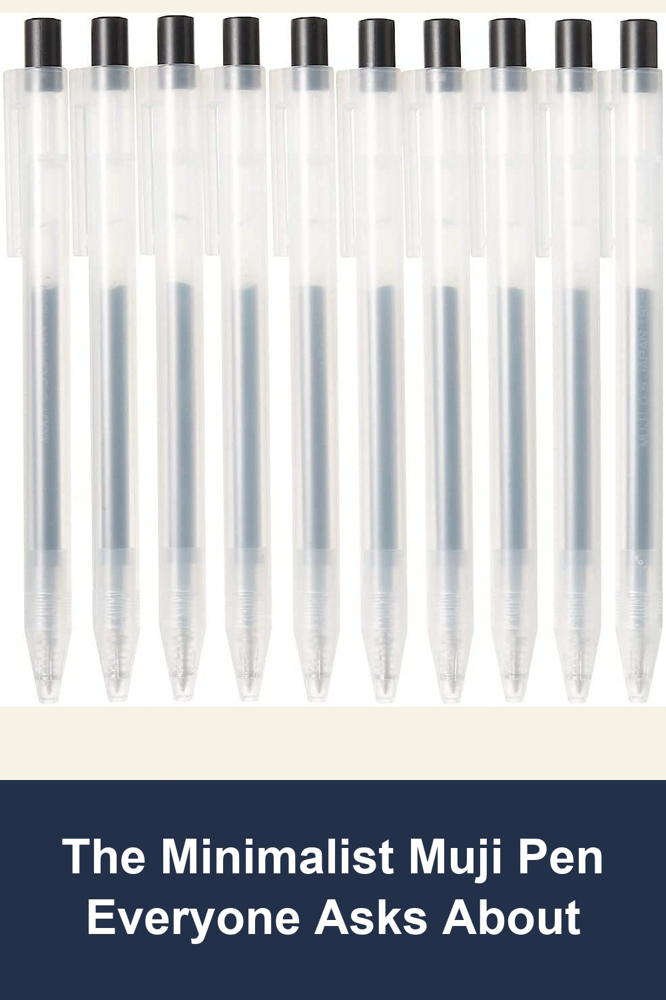

SAKURA Pigma Micron Fineliner Pens, Black, Assorted Points, 8 Pack
Sakura's archival-quality Pigma ink pens are the go-to for manga artists, illustrators, and journal keepers — 8 different tip sizes in one pack so you always have the right line weight on hand.
I love using these to draw - they barely smudge and dry pretty fast (unlike a lot of other black ink pens). The ink flows so well and it is never spotty.— verified Amazon buyer
View on Amazon →
Zebra Sarasa Clip 0.5 Retractable Gel Ink Pen, Vintage Colors, 10 Color Bundle
Made in Japan by Zebra, these 10 muted vintage tones have become a planner-community favorite — smooth 0.5mm gel ink that flows evenly without dragging.
Great for left handers! Zero smudging as a left hander who struggles to find pens that don't smear onto my hands as I write. They also work fantastic in my Hobonichi planner where the paper is super thin - the pen ink doesn't bleed through the pages.— verified Amazon buyer
View on Amazon →
MUJI Smooth Gel Ink Ballpoint Pen Knock Type 10-Pieces Set, 0.5mm, Black
No logo, no frills — just Muji's signature clear barrel and a lightweight retractable design that writes smoother than pens twice the price.
Almost everyone who uses one immediately wants to know what kind they are and where they can order them. They also dry very quickly and do not smear in my journal.— verified Amazon buyer
View on Amazon →